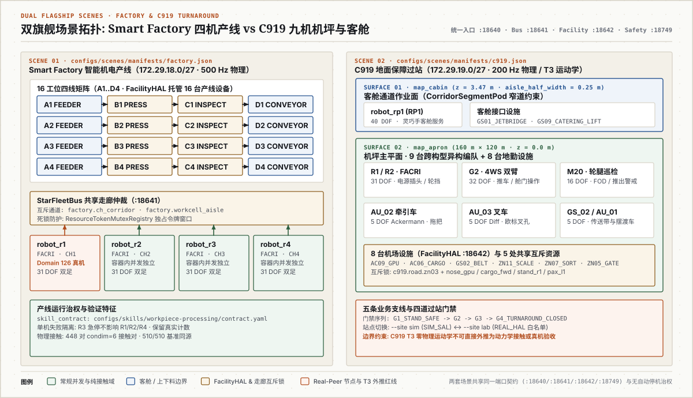

FACRI 采用「单一用户入口 + 三条场景后端路由」的命令行设计，自动依据场景参数与同步标志将请求分派至对应生命周期控制器。本页梳理命令路由逻辑与 Smart Factory、C919 Ground Turnaround 两大旗舰场景的核心配置差异。

统一入口路由机制
在仓库根目录调用 ./facrictl
后，宿主机入口自动按目标场景分派至对应脚本；对于计划生成、静态体检、状态查询、停车与清理等非运行时指令，入口直接在宿主机原地完成，无需拉起执行容器：
./facrictl
├── ui ... -> deployment/collaboration_launcher.py
├── --setup factory | 默认工厂 -> deployment/factory_system.py
├── --setup cell ... -> deployment/factory_cell_cli.py
└── --setup c919 | --scene <id> -> deployment/embodied_system.py（及 c919_system.py 专检）在默认工厂发布清单已绑定且未显式指定其他场景时，入口会自动附加全流程交互参数，确保四机工件转运负载完整就绪。
常用启动与检查工作流
针对工厂产线与机场保障两大旗舰场景，日常操作统一复用计划、体检、启动、状态、停车与关闭六项动词：
# Smart Factory：日常全流程仿真、单工位隔离复现、真机联调
./facrictl --setup factory start --mode daily --full-process --wait
./facrictl --setup factory start --cell B1 --cell-pose P02 --wait
./facrictl --setup factory start --real --wait
# C919 Ground Turnaround：全仿真模式、半实物展陈场地、MJCF 零步专检
./facrictl --setup c919 check --site sim
./facrictl --setup c919 start --site lab --wait
python3 deployment/c919_system.py check --site sim --strict-mjcf双场景核心规格对比
平台所有核心运行参数均固化在场景声明清单中，两大旗舰场景在机器人编队规模、物理节拍、作业空间与设施接入上的核心设计对照如下：
| 配置维度 | Smart Factory | C919 Ground Turnaround |
|---|---|---|
| 场景定位 | 机电 LVDT 四条并行产线连续加工 | C919 大飞机机坪与客舱双层地面保障 |
| 统一入口与端口 | 主入口 18640 端口（独立私有子网） | 主入口 18640 端口（独立私有子网） |
| 物理与控制节拍 | MuJoCo 500 Hz 物理 / 50 Hz 控制 | MuJoCo 200 Hz 物理 / 50 Hz 控制 |
| 机器人编队规模 | 4 台同构 FACRI 双足人形机器人 | 9 台跨构型异构（双足、四足轮腿、复合臂、4 型特种车） |
| 工作空间拓扑 | 16 个工位（A1 至 D4）与 4 座充电桩 | 160 m × 120 m 机坪主平面与 z = 3.47 m 客舱通道 |
| 外部设施接入 | 16 台产线设备（上料、压装、检测、输送） | 8 台机场地勤设备（电源插座、舱门、传送带、登机桥等） |
| 站点与运行模式 | 全仿真模式 / 1 号机对等真机同步模式 | 全仿真模式 / 半实物展陈模式 |
| 运维治权策略 | 废除实时率自动停机，最多 2 路视频流 | 废除实时率自动停机，最多 2 路视频流 |
展开参数矩阵与双场景清单配置详情
1.
智能工厂与单工位 CLI
选项（deployment/factory_system.py）
| 参数或子命令 | 取值范围与默认行为 | 工程用途 |
|---|---|---|
| 操作动词 | plan / check / start / status / stop / close / review |
计划生成、静态体检、服务启动、状态查询、停车、清理与关闭评审 |
| 运行模式 | --mode daily（默认）或 validation |
日常模式启用操作员长周期交互；验证模式用于有界离线验证 |
| 负载预设开关 | --full-process、--circuit、--performance-motion |
分别激活 16 工位端到端转运、闭合循环巡检与高性能运动调试 |
| 单工位复现 | --cell A1..D4 与 --cell-pose P00..P10 |
锁定单个工位与预设姿态执行局部隔离复现 |
| 对等真机模式 | --mock / --real（等价
--peer-mode） |
切换 1 号机对接容器内受控 Mock 或 Domain 126 外部真机 |
| 阻塞等待标志 | --wait |
启动时阻塞等待 READY 信号；关闭时等待容器与锁彻底销毁 |
2.
统一具身场景编排选项（deployment/embodied_system.py 与
deployment/c919_system.py）
deployment/embodied_system.py 支持
plan / check / prepare / start / stop / close / status
七项通用操作并强制校验统一端口 18640 与
no_rtf_auto_stop: true；常用定制参数包括
--site {sim,lab,real}（切换全仿 SIM_SAL
与受限子网半实物
REAL_HAL）、--active-robots（逗号分隔活跃机器人子集）、--synthetic-cpus
与 --synthetic-mem-mib（注入合成拓扑预演核组分配器）以及
--config（指定自定义清单）。运行
deployment/c919_system.py 附带 --strict-mjcf
时，将在零物理步数下校验场景资产哈希、全部 9 类机器人 MJCF 模型与
5_000_000 ns（200 Hz）步长约束。
3. 场景清单文件与内部资源标识对照
- Smart
Factory（
configs/scenes/manifests/factory.json）：名称为 Electromechanical LVDT Four-Line Factory，绑定子网 172.29.18.0/27、总线端口 18641、工装网关端口 18642、安全脉搏基址端口 18749；仲裁共享通道factory.ch_corridor与factory.workcell_aisle；接入上料机、压装单元、检测台、箱式输送线四类工装并绑定技能契约configs/skills/workpiece-processing/contract.yaml。 - C919 Ground
Turnaround（
configs/scenes/manifests/c919.json）：名称为 C919 Ground Turnaround Apron & Cabin，绑定子网 172.29.19.0/27 与统一辅助端口；覆盖地面工作面map_apron与客舱通道map_cabin（半宽 0.25 m）；仲裁道路与泊位互斥资源c919.road.zn03及机首供电、前货舱、R1 停机点、L1 登机口四处泊位；接入地面电源插座、前货舱门、传送带、称重台、分拣线、安检门、升降平台与登机桥 8 台设施，绑定技能契约configs/skills/c919-turnaround/contract.yaml；并发视频流上限固定为 2 路。